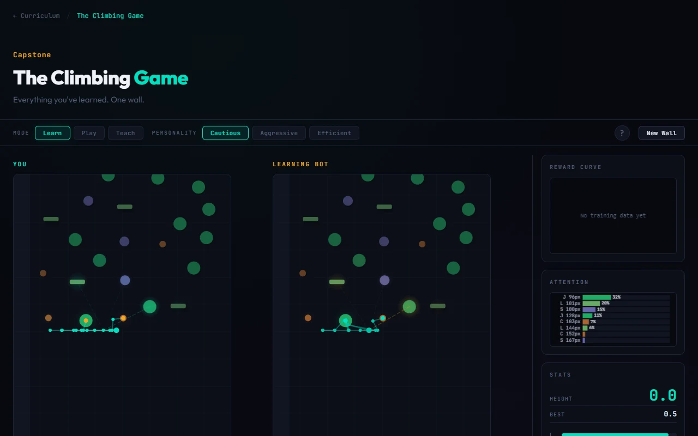

Learning
to climb.
Movement research, one handhold at a time. A look inside an experiment in teaching characters to climb.
Try the climbing wall
Your hands. Your route.
This small preview uses the research prototype's ragdoll physics. You control the climber; no learning model runs here.
Reach the summit
Choose a hand, then a numbered hold. A solid ring marks what that hand can reach. Keep one hand attached.
The selected hand alternates after each grab.
Reachable holds
Controls and experiment notes
Click or tap a hold. Q / E selects a hand. R resets. Space pauses when the wall has focus. All controls also work with Tab and Enter.
The compact route has rest holds and no stamina timer. Progress resets when you leave. Touch, mouse and keyboard controls are supported.
From movement to learned behaviour.
The larger project explores characters that choose routes and learn how to move through them. The local prototype includes manual climbing, demonstrations and training experiments.
The training code and research workspace stay private. This public slice shares the physical climbing problem and a real view of the work.
Longer term: Rust, WASM and wgpu, with the browser as a place to play and inspect the results.